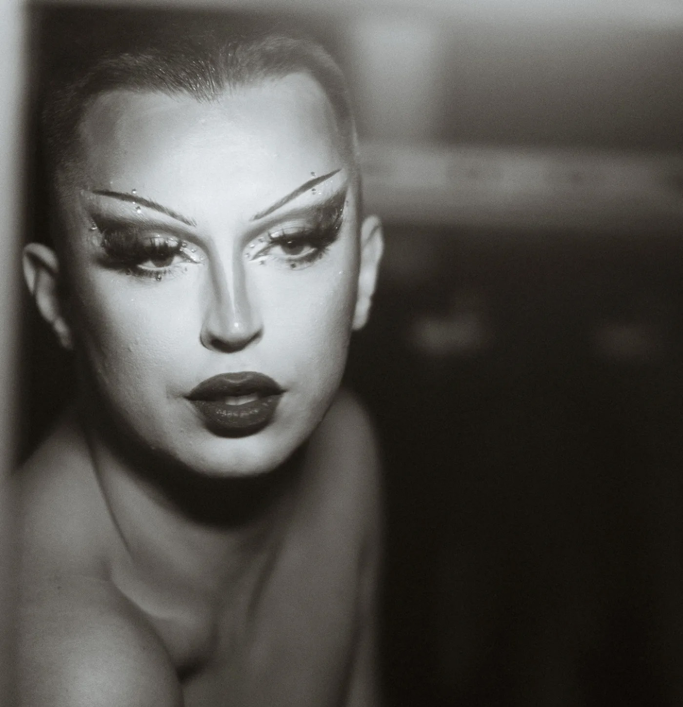

01 — Documentaire
Dutch Queer Scene and its Beauty
Een doorlopende documentaireserie over de diverse queer scene in Nederland. Drag queens, kings, pups en andere gemeenschappen, gemaakt in samenwerking met het Stadsarchief Rotterdam.
Bekijk project